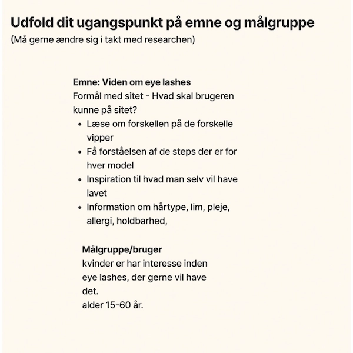

Tema 3 - Grundlæggende UX/UI:
Præsentation & Dokumentation
UX/UI
I tema 03, lærte vi om UX og UI. begrebet UX står for User Experience. Altså det er processen der designer oplevelsen, for brugeren. For at kunne designe oplevelsen for brugen, skal man kunne research. Formålet for research er at få viden om og skabe sammenhæng mellen: forretningen/kunden brugeren konkurrenter UI design, er at skabe en brugergrænseflade, som er nem for de besøgende at finde rundt på og let at forstå opbygningen af.
Research
I min desktop research havde jeg lavet moodbord, med alle de flotte fonts jeg kunne lide. Jeg fandt nogle forskellige billeder, med forskellige vinkler, og jeg var inde og se på andre hjemmesider for at få lidt inspiration. Jeg fandt også 3 værdi ord, ud fra de ord, lavede jeg også et moodbord, hvilket hjalp mig med at finde farver, og de rigtige billeder. Jeg begyndte og lave en målgruppe, og lavede små test på mine kunder på mit private arbejde, hvor jeg fandt frem til hvad der mangler idag af information af eye lashes.
Udviklingen af research
Efter jeg havde lavet alt min research, kunne jeg begynde og lave wiseframe, jeg kunne lavet prototype og jeg kunne lave mit styletile.
Logo
Jeg fandt ret hurtig ud af, at i min logo ville jeg have både navnet og noget med vipper eller et øje skulle være indblandet. Jeg prøvede lidt forskelligt, indtil jeg fandt det logo som jeg synes passede bedst og som så pænest ud. Mit ikon var ret let at lave, da jeg bare kunne tage øjet fra logoet. Det var vigtig for mig, at mit ikon var genkendeligt, og det ikke var noget andet. Det skulle passe sammen.
Præsentation
I min præsentation fortalte jeg, hvor jeg startede henne som der også kan ses på de forrige billeder, og hvordan det færdige resultat blev. jeg kommer ind på bl.a på de forskellige test og noget af det kode som jeg har synes har været udfordrende eller sjovt at lave.